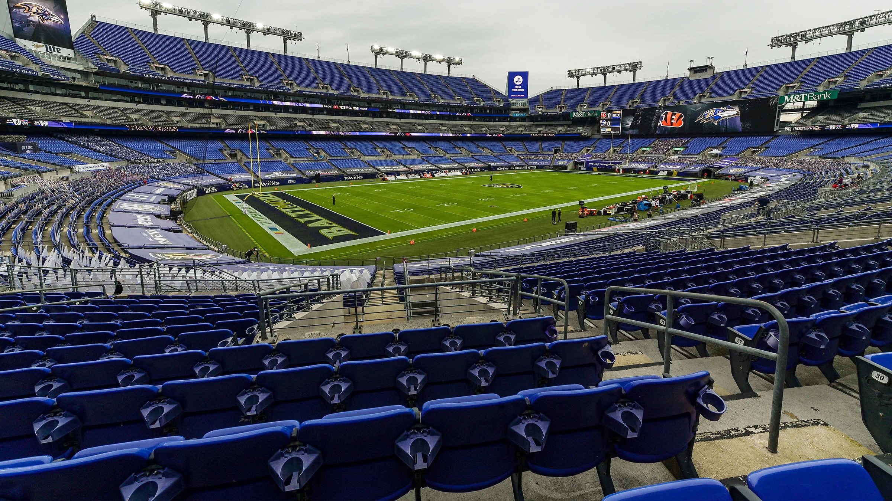

Baltimore Ravens
Play like a Ravens
The Baltimore Ravens are Maryland’s pride when it comes to football. Known for their strong defense and passionate fanbase, the Ravens have made a big mark in the NFL. They play at M&T Bank Stadium in Baltimore, and every game day brings excitement to the city. Players like Ray Lewis and Lamar Jackson have become icons, inspiring the next generation of football lovers.
The Baltimore Ravens are a professional football team based in Baltimore, Maryland. They are part of the National Football League (NFL) and play in the American Football Conference (AFC) North division. Since joining the league in 1996, the Ravens have become known for their strong defense and passionate fans.
The team plays its home games at M&T Bank Stadium, which is located near downtown Baltimore. The stadium fills with excitement on game days as fans dressed in purple cheer loudly for their team. From tailgating to touchdown celebrations, the Ravens experience is one that brings the whole city together.
Over the years, the Ravens have built a reputation as one of the toughest teams in the NFL. Legendary players like Ray Lewis and Ed Reed helped lead the team to Super Bowl victories, and new stars continue to rise each season. For many people in Maryland, cheering for the Ravens is more than just watching football — it’s a proud tradition.
